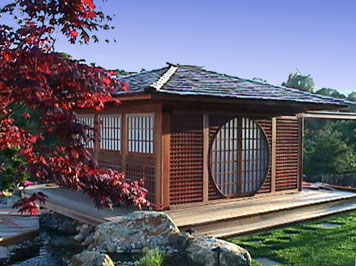

|  |
Thus I have a pretty decent sky to the west and south and at the zenith but the east and north are pretty much lost. Fortunately (OK, it wasn't exactly an accident), my backyard is west of my house. My southern horizon isn't great but it is good enough to see Scorpius in the summer. I can usually see the Milky Way and on a good night I can see M31 without optical aid. Not bad for suburbia.
I knew from the beginning that I wanted a roll-off design, not a dome. I like the feeling of the open sky above me and the climate here is mild enough that a dome is not a requirement. But more importantly, I wanted it to be aesthetically pleasing. After all, it dominates my backyard. So I decided on a "Japanese tea house" look and designed the rest of my landscaping to match.
There were two major tradeoffs I had to make. First, having the roll-off support structure on the north side as is traditional was out of the question. It would have been in the middle of my lawn. So it is on the west side where it is least visible from my house (and fortunately, not too bad for my neighbors, either). That compromises my view of the sky low in the west but while that is the darkest part of my sky it is rarely worth observing due to the seeing.
Second, between the "tea house" design, the building codes, and a pretty conservative structural engineer the structure got more massive than I would have liked. The engineer insisted on making it out of steel which greatly increased the cost (but at least I can use it as a shelter in an earthquake). It wasn't possible to have the whole south wall fold down (as is also commonly done) so I have to make do with looking through fold-down windows. This means that the posts and tops of the walls are pretty thick and obstruct more sky than I would have liked (I did a lot of trigonometric calculations about what part of the sky would be blocked, all of which turned out wrong since the obstructions got much thicker during construction). I partially compensated for this by designing a ridiculously complicated pier which allows me to move the telescope up and down to get different angles thru the windows and over the walls.
Building the observatory was part of a larger project to landscape the entire yard. Getting architects and plans and permits and contractors all arranged took over a year before we started work. So in the meanwhile, I made a temporary wooden pier for my LX200 in the spot destined to be the observatory. Of course, since there was a lot of grading and digging to be done the very first thing we did when construction began was to remove the temporary pier. It was a good thing I had the 10" f/6 Dob I built in Jane Houston's SJAA mirror making class last year to use while the LX200 was off line.
Much more information and pictures are available at http://www.seds.org/billa/obs/obs.html